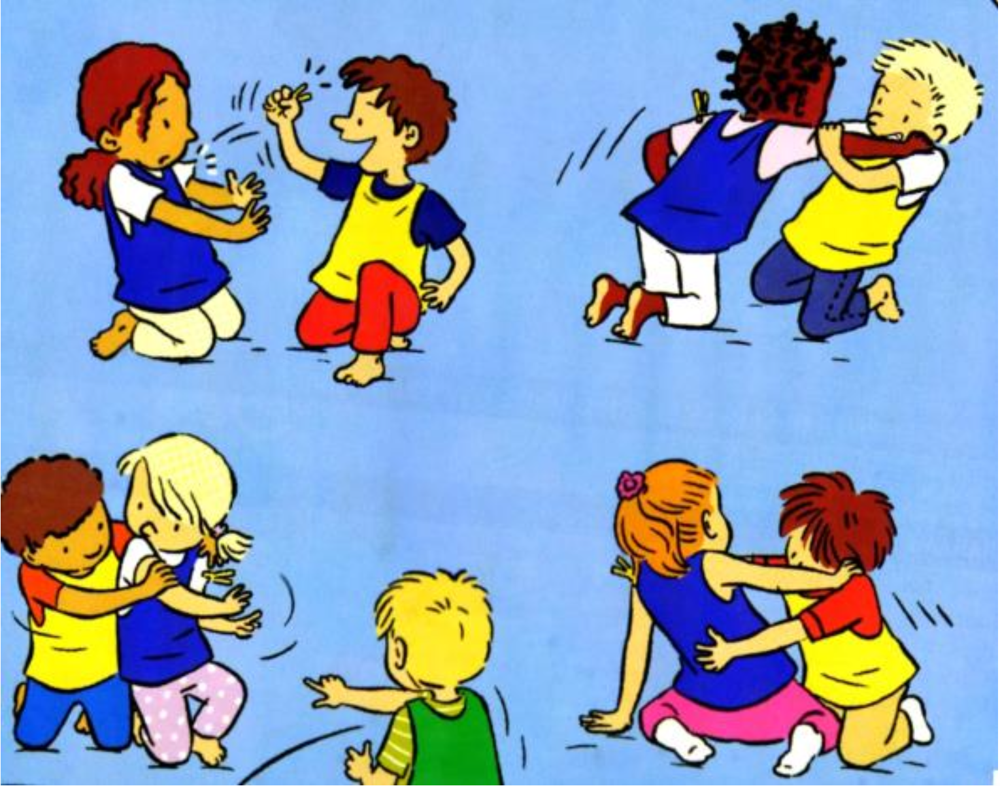

Objectif d'apprentissage
Prendre conscience d'un projet commun à tous.
But
Pour les chasseurs, voler le plus d'épingles possible sur les hérissons.
Critères de réussite
- Avoir réussi à voler toutes les pinces à linge dans un temps donné.
Règles
- Au signal, les chasseurs volent les pinces à linge des hérissons qui essaient de leur échapper.
- Lorsqu'un hérisson n'a plus de pinces, il sort du terrain.
- Au signal de fin, compter le nombre de pinces restantes sur les hérissons.
Organisation
Deux équipes : les hérissons à quatre pattes avec des pinces à linge sur le corps, et les chasseurs debout identifiés avec des chasubles. Espace de jeu de 6m x 4m, temps limité à 1 minute 30.
Modalités d'exécution
- Les chasseurs s'unissent pour attraper le maximum de pinces à linge.
Évolutions
- Les hérissons restent dans un cerceau (pas de déplacement).
- Chasseurs et hérissons sont debout.
- Limiter le nombre de pinces à linge sur les hérissons.
- Placer les pinces à des endroits peu accessibles.